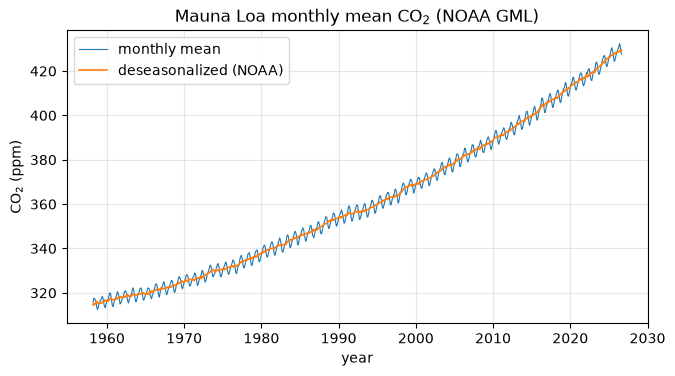
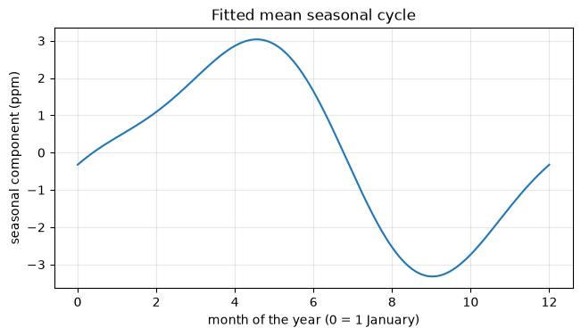
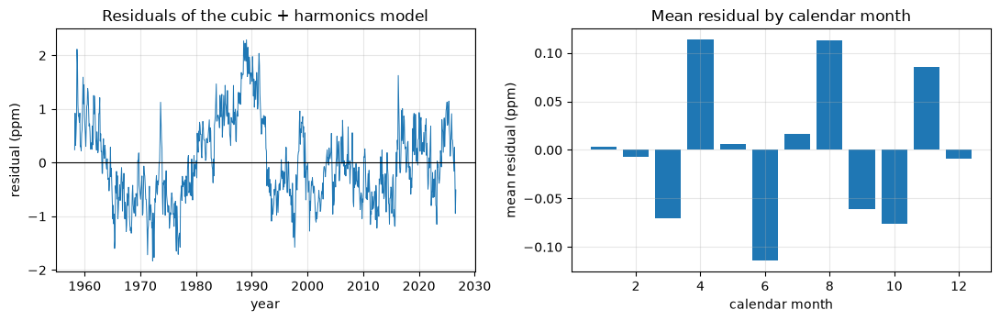
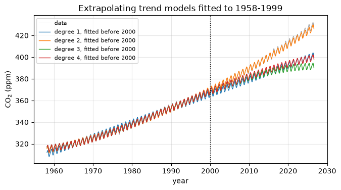

8.14. Case study: the Mauna Loa carbon dioxide record#
This notebook accompanies Chapter 8 of the notes (Case study: the Mauna Loa carbon dioxide record). We fit a linear least-squares model to the monthly mean atmospheric CO\(_2\) concentration measured at Mauna Loa, Hawaii, since 1958 [NOAA Global Monitoring Laboratory, 2026].
Learning objectives. After working through this case study you should be able to
set up a design matrix for a model that is linear in its parameters (polynomial trend plus harmonics);
explain, with condition numbers, why the time variable must be centered and scaled before building a polynomial basis;
compare the normal equations, Householder QR and
numpy.linalg.lstsqon real data and interpret the differences;extract physically meaningful quantities with units (seasonal amplitude in ppm, growth rate in ppm/yr) from the fitted coefficients;
analyze residuals and recognize the limits of the model, in particular for extrapolation.
8.14.1. The data#
The file co2_mauna_loa_monthly.csv in the course repository is a processed
copy of the monthly record published by the NOAA Global Monitoring
Laboratory (GML) [NOAA Global Monitoring Laboratory, 2026]. Data from March 1958 to April 1974 were
obtained by C. David Keeling of the Scripps Institution of Oceanography; later
data are NOAA measurements. From December 2022 to July 2023, after the
eruption of Mauna Loa, observations come from a site on Maunakea about 21
miles north. The snapshot used here contains 822 months, from March 1958 to
August 2026.
The columns are year, month, decimal_date (the fractional year at the
center of the month), average (the monthly mean CO\(_2\) mole fraction in dry
air, in parts per million, ppm), deseasonalized (the same series with the
average seasonal cycle removed by NOAA), ndays (the number of daily means
used), and sdev and unc (the standard deviation of the daily means and the
uncertainty of the monthly mean, in ppm). Negative values of ndays, sdev
and unc mean “not available”; NOAA interpolated missing months. Comment
lines in the file start with #. NOAA asks users of the data to credit GML.
from pathlib import Path
import urllib.request
import matplotlib.pyplot as plt
import numpy as np
import scipy.linalg as sla
rng = np.random.default_rng(8) # not used for the data; kept for the "Your turn" exercises
u = np.finfo(float).eps / 2 # unit roundoff 2**-53
plt.rcParams.update({"figure.figsize": (7.5, 3.8), "axes.grid": True, "grid.alpha": 0.3})
DATA_URL = "https://raw.githubusercontent.com/aalsammani/Scientific-Computations-I-Notebooks/main/data/"
def data_file(name):
"""Return a path to data/<name>, downloading it if it is not available locally."""
local = Path("../../data") / name
if local.exists():
return local
target = Path(name)
if not target.exists():
urllib.request.urlretrieve(DATA_URL + name, target)
return target
lines = [ln for ln in data_file("co2_mauna_loa_monthly.csv").read_text(encoding="utf-8").splitlines()
if not ln.startswith("#")]
names = lines[0].split(",")
raw = np.loadtxt(lines[1:], delimiter=",")
co2 = {name: raw[:, j] for j, name in enumerate(names)}
t, y = co2["decimal_date"], co2["average"]
m = len(t)
print("columns:", names)
print(f"{m} months from {int(co2['year'][0])}-{int(co2['month'][0]):02d} "
f"to {int(co2['year'][-1])}-{int(co2['month'][-1]):02d}")
print(f"CO2 ranges from {y.min():.2f} to {y.max():.2f} ppm")
print(f"months with ndays not available: {np.sum(co2['ndays'] < 0)}")
columns: ['year', 'month', 'decimal_date', 'average', 'deseasonalized', 'ndays', 'sdev', 'unc']
822 months from 1958-03 to 2026-08
CO2 ranges from 312.42 to 432.34 ppm
months with ndays not available: 195
fig, ax = plt.subplots()
ax.plot(t, y, lw=0.8, label="monthly mean")
ax.plot(t, co2["deseasonalized"], lw=1.2, label="deseasonalized (NOAA)")
ax.set_xlabel("year")
ax.set_ylabel("CO$_2$ (ppm)")
ax.set_title("Mauna Loa monthly mean CO$_2$ (NOAA GML)")
ax.legend()
plt.show()

Two features are obvious: a steady, slightly accelerating increase, and a regular seasonal oscillation. We model them with a low-degree polynomial trend and the first two harmonics of the annual cycle,
with a center \(t_{\rm c}\) and a scale \(t_{\rm s}\) still to be chosen. The model is linear in the \(d+5\) parameters, so fitting it to the \(m = 822\) data is a linear least-squares problem \(\min\|Ax - y\|_2\) whose design matrix has columns \(1, s, \dots, s^d\) and the four harmonics. We use \(d = 3\).
def design(tt, degree=3, center=0.0, scale=1.0):
"""Design matrix: powers of (t - center)/scale, then annual and semiannual harmonics."""
s = (tt - center) / scale
cols = [s**k for k in range(degree + 1)]
cols += [np.cos(2 * np.pi * tt), np.sin(2 * np.pi * tt), np.cos(4 * np.pi * tt), np.sin(4 * np.pi * tt)]
return np.column_stack(cols)
t_mid = (t.max() + t.min()) / 2 # midpoint of the record
t_half = (t.max() - t.min()) / 2 # half its length: s runs over [-1, 1]
print(f"t_mid = {t_mid:.4f}, t_half = {t_half:.4f} years")
t_mid = 1992.4138, t_half = 34.2111 years
8.14.2. 1. Why the time variable must be centered and scaled#
With the raw decimal year (\(t_{\rm c} = 0\), \(t_{\rm s} = 1\)) the columns \(1, t, t^2, t^3\) have wildly different sizes, and, worse, they are nearly parallel: over the record, \(t\) changes by only a few percent of its value, so \(t^2\) and \(t^3\) look almost like multiples of \(1\) and \(t\). We compute the 2-norm condition number of the design matrix for the raw variable, after scaling each column to unit norm, after centering only, and after centering and scaling to \([-1, 1]\).
def unit_columns(A):
return A / np.linalg.norm(A, axis=0)
variants = {
"raw t": design(t, 3),
"raw t, columns scaled to unit norm": unit_columns(design(t, 3)),
"centered: t - t_mid": design(t, 3, t_mid, 1.0),
"centered and scaled: s in [-1, 1]": design(t, 3, t_mid, t_half),
}
for name, A in variants.items():
print(f"{name:38s} kappa_2(A) = {np.linalg.cond(A):9.3e}")
A_raw = variants["raw t"]
print("\ncolumn norms of the raw polynomial columns:", np.array2string(np.linalg.norm(A_raw[:, :4], axis=0), precision=3))
print(f"range of t relative to its mean: {(t.max() - t.min()) / t.mean():.3f}")
cos_angle = A_raw[:, 0] @ A_raw[:, 1] / (np.linalg.norm(A_raw[:, 0]) * np.linalg.norm(A_raw[:, 1]))
print(f"cosine of the angle between the columns 1 and t: {cos_angle:.8f}")
raw t kappa_2(A) = 1.030e+16
raw t, columns scaled to unit norm kappa_2(A) = 1.165e+07
centered: t - t_mid kappa_2(A) = 2.279e+04
centered and scaled: s in [-1, 1] kappa_2(A) = 8.202e+00
column norms of the raw polynomial columns: [2.867e+01 5.713e+04 1.138e+08 2.269e+11]
range of t relative to its mean: 0.034
cosine of the angle between the columns 1 and t: 0.99995075
Interpretation. The raw design matrix has \(\kappa_2(A)\approx10^{16}\), which is about \(1/u\): in double precision it is indistinguishable from a rank-deficient matrix. Two separate effects are responsible.
Bad scaling. The columns have norms from about \(29\) (the constant) to about \(2\times10^{11}\) (the cubic). Scaling the columns removes this effect, but \(\kappa\) is still about \(10^7\).
Near collinearity. The cosine of the angle between the constant column and \(t\) is about \(0.99995\): the columns point in almost the same direction. This is what centering removes. After centering and scaling, \(\kappa\approx8\), and the polynomial part of the basis is well conditioned.
Can we trust a computed condition number of \(10^{16}\)? The smallest singular value is computed with an absolute error of order \(u\sigma_1\), which is comparable to \(\sigma_{\min}\) itself here. We can check it independently: \(\sigma_{\min}^{-2}\) is the largest eigenvalue of \((A^TA)^{-1}\), and we can form \(A^TA\) and its inverse exactly in rational arithmetic from the stored matrix, and only then round.
from fractions import Fraction
def smallest_singular_value_exact(A):
"""sigma_min of the stored matrix from the exact inverse of A^T A (rational arithmetic)."""
mm, n = A.shape
F = [[Fraction(v) for v in row] for row in A.tolist()]
M = [[sum(F[k][i] * F[k][j] for k in range(mm)) for j in range(n)] for i in range(n)]
Inv = [[Fraction(int(i == j)) for j in range(n)] for i in range(n)]
for j in range(n): # Gauss-Jordan (M is SPD: no pivoting)
p = M[j][j]
M[j] = [v / p for v in M[j]]
Inv[j] = [v / p for v in Inv[j]]
for i in range(n):
if i != j and M[i][j] != 0:
f = M[i][j]
M[i] = [a - f * b for a, b in zip(M[i], M[j])]
Inv[i] = [a - f * b for a, b in zip(Inv[i], Inv[j])]
Minv = np.array([[float(v) for v in row] for row in Inv])
return 1.0 / np.sqrt(np.linalg.eigvalsh(Minv).max())
smin_exact = smallest_singular_value_exact(A_raw)
kappa_exact = np.linalg.norm(A_raw, 2) / smin_exact
print(f"kappa from numpy.linalg.cond: {np.linalg.cond(A_raw):.4e}")
print(f"kappa via exact inverse of A^T A: {kappa_exact:.4e}")
assert abs(kappa_exact / np.linalg.cond(A_raw) - 1) < 1e-2
kappa from numpy.linalg.cond: 1.0304e+16
kappa via exact inverse of A^T A: 1.0304e+16
The two values agree to several digits, so \(\kappa_2(A)\approx1.0\times10^{16}\) is a property of the stored matrix, not an artifact of the SVD.
8.14.3. 2. Three solvers on raw and on scaled time#
We now solve the problem with the normal equations (Cholesky), with a
Householder QR factorization (numpy.linalg.qr followed by a triangular
solve), and with numpy.linalg.lstsq (an SVD-based LAPACK driver), for the
raw and for the centered and scaled variable. The reference is the QR solution
for the scaled variable. The two bases span the same space of functions, so
the exact fitted values are the same for both, while the coefficients are
not comparable. We therefore compare the fitted values.
def solve_normal(A, b):
L = np.linalg.cholesky(A.T @ A) # raises LinAlgError if not positive definite
return sla.cho_solve((L, True), A.T @ b)
def solve_qr(A, b):
Q, R = np.linalg.qr(A) # Householder QR (LAPACK), thin Q
return sla.solve_triangular(R, Q.T @ b)
def solve_lstsq(A, b):
x, res, rank, sv = np.linalg.lstsq(A, b, rcond=None)
return x, rank
A_s = design(t, 3, t_mid, t_half)
x_ref = solve_qr(A_s, y)
fit_ref = A_s @ x_ref
print(f"optimal residual norm: {np.linalg.norm(y - fit_ref):.4f} ppm\n")
print(f"{'basis':8s} {'method':18s} {'rank':>4s} {'||y - Ax||':>11s} {'max |fit - ref| (ppm)':>22s}")
results = {}
for basis, A in (("raw", A_raw), ("scaled", A_s)):
x_ne = solve_normal(A, y)
x_qr = solve_qr(A, y)
x_ls, rank = solve_lstsq(A, y)
for method, x, rk in (("normal equations", x_ne, ""), ("Householder QR", x_qr, ""), ("lstsq (SVD)", x_ls, rank)):
dev = np.abs(A @ x - fit_ref).max()
results[basis, method] = dev
print(f"{basis:8s} {method:18s} {str(rk):>4s} {np.linalg.norm(y - A @ x):11.4f} {dev:22.2e}")
optimal residual norm: 21.9577 ppm
basis method rank ||y - Ax|| max |fit - ref| (ppm)
raw normal equations 21.9578 2.04e-03
raw Householder QR 21.9577 4.72e-10
raw lstsq (SVD) 7 22.9503 6.15e-01
scaled normal equations 21.9577 1.36e-12
scaled Householder QR 21.9577 0.00e+00
scaled lstsq (SVD) 8 21.9577 7.39e-13
Interpretation.
With the raw variable,
lstsquses its default cutoff: singular values below \(\max(m,n)\,\epsilon_{\text{mach}}\,\sigma_1\) are treated as zero. Since \(\sigma_{\min}/\sigma_1\approx10^{-16}\), it declares the matrix to have numerical rank 7, drops one direction, and returns the minimum-norm solution of a different problem. Its residual norm is about one ppm larger than the optimum, and the fitted curve is off by more than half a ppm at some months, far more than the measurement uncertainty.Householder QR on the raw matrix is almost as accurate as on the scaled one. This is not luck: Householder QR is insensitive to the scaling of the columns (Remark 8.1), so its accuracy is governed by the condition number of the column-scaled matrix, about \(10^7\), and the fitted values are much better conditioned still. The normal equations are also insensitive to column scaling, but they see \(\kappa^2\approx10^{14}\) for the column-scaled matrix, and their fitted values are off by about \(10^{-3}\) ppm.
After centering and scaling, all three methods agree to within about \(10^{-12}\) ppm. For a matrix with \(\kappa\approx8\) even the normal equations are perfectly adequate.
The raw coefficients are also meaningless as numbers: the intercept is the value of the fitted cubic in the year 0, about \(-3\times10^5\) ppm, and the four coefficients nearly cancel each other over the data range.
print("raw-basis polynomial coefficients (QR): ", np.array2string(solve_qr(A_raw, y)[:4], precision=4))
print("scaled-basis polynomial coefficients (QR):", np.array2string(x_ref[:4], precision=4))
x_ne_s, x_ls_s = solve_normal(A_s, y), solve_lstsq(A_s, y)[0]
rel_diff = max(np.linalg.norm(x_ne_s - x_ref), np.linalg.norm(x_ls_s - x_ref)) / np.linalg.norm(x_ref)
print(f"scaled basis: max relative difference of coefficients between methods = {rel_diff:.1e}")
# kappa(A_s) ~ 8, so all three methods should agree to a modest multiple of kappa^2 u ~ 1e-14.
assert rel_diff < 100 * np.linalg.cond(A_s) ** 2 * u
raw-basis polynomial coefficients (QR): [-3.0315e+05 4.8059e+02 -2.5387e-01 4.4730e-05]
scaled-basis polynomial coefficients (QR): [356.071 56.0517 15.7846 1.791 ]
scaled basis: max relative difference of coefficients between methods = 1.4e-14
8.14.4. 3. The fitted model#
From here on we use the centered and scaled basis. The coefficients \(c_k\) multiply powers of the dimensionless variable \(s\), so \(c_k\) has the unit ppm; the harmonic coefficients are also in ppm.
c, (a1, b1, a2, b2) = x_ref[:4], x_ref[4:]
amp1, amp2 = np.hypot(a1, b1), np.hypot(a2, b2)
phase = np.linspace(0, 1, 10001)
seasonal = a1 * np.cos(2 * np.pi * phase) + b1 * np.sin(2 * np.pi * phase) \
+ a2 * np.cos(4 * np.pi * phase) + b2 * np.sin(4 * np.pi * phase)
print(f"annual harmonic amplitude: {amp1:.2f} ppm")
print(f"semiannual harmonic amplitude: {amp2:.2f} ppm")
print(f"seasonal cycle: peak-to-peak {seasonal.max() - seasonal.min():.2f} ppm, "
f"maximum at {phase[seasonal.argmax()]:.2f} yr, minimum at {phase[seasonal.argmin()]:.2f} yr after 1 January")
fig, ax = plt.subplots()
ax.plot(12 * phase, seasonal)
ax.set_xlabel("month of the year (0 = 1 January)")
ax.set_ylabel("seasonal component (ppm)")
ax.set_title("Fitted mean seasonal cycle")
plt.show()
annual harmonic amplitude: 2.84 ppm
semiannual harmonic amplitude: 0.80 ppm
seasonal cycle: peak-to-peak 6.36 ppm, maximum at 0.38 yr, minimum at 0.75 yr after 1 January

The fitted seasonal cycle has a peak-to-peak range of about \(6.4\) ppm, with its maximum in May and its minimum around the beginning of October: CO\(_2\) is drawn down during the northern-hemisphere growing season.
Growth rate. The trend is \(p(s) = \sum_k c_ks^k\) with \(s = (t - t_{\rm c})/t_{\rm s}\), so by the chain rule its rate of change in ppm per year is \(p'(s)/t_{\rm s}\). We compare the model with a model-free estimate from the data: the change of the annual mean over a decade, divided by ten years.
def growth_rate(year):
s = (year - t_mid) / t_half
return sum(k * c[k] * s ** (k - 1) for k in range(1, 4)) / t_half
def trend(year):
s = (year - t_mid) / t_half
return sum(c[k] * s**k for k in range(4))
for yr in (1960, 1980, 2000, 2020):
print(f"growth rate of the cubic trend in {yr}: {growth_rate(yr):.2f} ppm/yr")
annual_mean = lambda yr: y[co2["year"] == yr].mean()
for y0, y1 in ((1959, 1969), (2015, 2025)):
data_rate = (annual_mean(y1) - annual_mean(y0)) / (y1 - y0)
model_rate = (trend(y1 + 0.5) - trend(y0 + 0.5)) / (y1 - y0)
print(f"{y0}-{y1}: change of annual means {data_rate:.2f} ppm/yr, model {model_rate:.2f} ppm/yr")
growth rate of the cubic trend in 1960: 0.91 ppm/yr
growth rate of the cubic trend in 1980: 1.32 ppm/yr
growth rate of the cubic trend in 2000: 1.85 ppm/yr
growth rate of the cubic trend in 2020: 2.48 ppm/yr
1959-1969: change of annual means 0.86 ppm/yr, model 0.99 ppm/yr
2015-2025: change of annual means 2.63 ppm/yr, model 2.50 ppm/yr
The growth rate has almost tripled, from about \(0.9\) ppm/yr around 1960 to about \(2.5\) ppm/yr around 2020, and the model agrees with the model-free decadal estimates to within about \(0.13\) ppm/yr.
8.14.5. 4. Residual analysis#
r = y - fit_ref
rms = np.sqrt(np.mean(r**2))
lag1 = np.corrcoef(r[:-1], r[1:])[0, 1]
print(f"RMS residual {rms:.2f} ppm, max |residual| {np.abs(r).max():.2f} ppm, lag-1 autocorrelation {lag1:.2f}")
# The residual of a least-squares fit is orthogonal to the columns: ||A^T r|| is of order u ||A|| ||y||.
print(f"||A^T r|| / (||A|| ||y||) = {np.linalg.norm(A_s.T @ r) / (np.linalg.norm(A_s, 2) * np.linalg.norm(y)):.1e}")
assert np.linalg.norm(A_s.T @ r) < 100 * m * u * np.linalg.norm(A_s, 2) * np.linalg.norm(y)
month_mean = [r[co2["month"] == k].mean() for k in range(1, 13)]
fig, axes = plt.subplots(1, 2, figsize=(11, 3.6))
axes[0].plot(t, r, lw=0.7)
axes[0].axhline(0, color="k", lw=0.8)
axes[0].set_xlabel("year")
axes[0].set_ylabel("residual (ppm)")
axes[0].set_title("Residuals of the cubic + harmonics model")
axes[1].bar(range(1, 13), month_mean)
axes[1].set_xlabel("calendar month")
axes[1].set_ylabel("mean residual (ppm)")
axes[1].set_title("Mean residual by calendar month")
plt.tight_layout()
plt.show()
print("mean residual by month (ppm):", np.array2string(np.array(month_mean), precision=2))
RMS residual 0.77 ppm, max |residual| 2.29 ppm, lag-1 autocorrelation 0.89
||A^T r|| / (||A|| ||y||) = 5.0e-16

mean residual by month (ppm): [ 0. -0.01 -0.07 0.11 0.01 -0.11 0.02 0.11 -0.06 -0.08 0.09 -0.01]
Interpretation. The RMS residual of about \(0.77\) ppm is small compared with the \(120\) ppm increase over the record, but the residuals are not like independent measurement errors. Their lag-one autocorrelation is about \(0.89\), and they show slow oscillations lasting several years, a signature of interannual variability that a cubic cannot represent. The mean residual by calendar month is small (at most about \(0.1\) ppm), so two harmonics capture the average seasonal shape reasonably well.
Correlated residuals have a practical consequence. The textbook formulas for the standard errors of least-squares coefficients assume independent errors; with strongly correlated residuals they would badly understate the uncertainty of, say, the growth rate. The least-squares solution is still well defined and accurately computed; what changes is its statistical interpretation.
8.14.6. 5. How many polynomial terms? And the danger of extrapolation#
Adding polynomial terms always decreases the residual. The conditioning grows with the degree even in the scaled variable, but stays harmless here.
print(" degree RMS residual (ppm) kappa(A)")
for d in range(1, 6):
A_d = design(t, d, t_mid, t_half)
x_d = solve_qr(A_d, y)
print(f" {d} {np.sqrt(np.mean((y - A_d @ x_d) ** 2)):.3f} {np.linalg.cond(A_d):7.2f}")
degree RMS residual (ppm) kappa(A)
1 4.786 1.73
2 0.813 3.75
3 0.766 8.20
4 0.663 18.87
5 0.607 43.08
The residual keeps decreasing, but that does not tell us which model is better for prediction. We fit each model only to the months before 2000 and compare its predictions with the data after 2000. The same centering and scaling constants are used throughout, so that only the data differ.
train = t < 2000
last12 = np.arange(m) >= m - 12
fig, ax = plt.subplots()
ax.plot(t, y, color="0.6", lw=0.7, label="data")
extrap = {}
for d in (1, 2, 3, 4):
x_d = solve_qr(design(t[train], d, t_mid, t_half), y[train])
pred = design(t, d, t_mid, t_half) @ x_d
fit_rms = np.sqrt(np.mean((pred - y)[train] ** 2))
extrap[d] = np.mean((pred - y)[last12])
print(f"degree {d}: RMS residual before 2000 {fit_rms:.3f} ppm; "
f"mean prediction error over the last 12 months {extrap[d]:+.1f} ppm")
ax.plot(t, pred, lw=1, label=f"degree {d}, fitted before 2000")
ax.axvline(2000, color="k", ls=":", lw=1)
ax.set_xlabel("year")
ax.set_ylabel("CO$_2$ (ppm)")
ax.set_title("Extrapolating trend models fitted to 1958-1999")
ax.legend(fontsize=8)
plt.show()
degree 1: RMS residual before 2000 1.808 ppm; mean prediction error over the last 12 months -27.8 ppm
degree 2: RMS residual before 2000 0.806 ppm; mean prediction error over the last 12 months -2.1 ppm
degree 3: RMS residual before 2000 0.611 ppm; mean prediction error over the last 12 months -37.1 ppm
degree 4: RMS residual before 2000 0.611 ppm; mean prediction error over the last 12 months -29.4 ppm

Interpretation. Before 2000 the cubic fits better than the quadratic, yet by 2025–2026 it is about \(37\) ppm too low, while the quadratic is off by about \(2\) ppm. A polynomial is determined by its behavior on the fitted interval, and outside it the higher-degree terms dominate: the cubic coefficient fitted to 1958–1999 is negative (about \(-15\) ppm in the scaled variable, whereas the fit to the whole record gives about \(+1.8\) ppm), and outside the fitted interval it bends the curve downward. The fact that the quadratic extrapolates well over 25 years is an empirical observation for this data set, not a consequence of the mathematics.
8.14.7. 6. Limits of the model#
The model is empirical. It has no physical mechanism, so it cannot be used to predict future concentrations, which depend on future emissions.
The residuals are strongly correlated, so naive statistical error bars would be too optimistic.
The seasonal cycle is assumed to have constant amplitude and shape (Exercise 8.13 asks you to test this).
The fit uses the 2-norm, which gives large weight to outliers; monthly means from few days of data (see
ndays) are treated like all others.
8.14.8. Common mistakes#
Building a Vandermonde matrix from raw calendar years. Always center (and preferably scale) the variable, or use an orthogonal polynomial basis.
Reading the coefficients of a raw-year polynomial as meaningful numbers.
Trusting
lstsqwithout looking at the rank it reports: with default settings it silently changed the problem here.Judging a model by its in-sample residual alone and then extrapolating.
8.14.9. Your turn#
Replace the monomials \(s^k\) by Legendre polynomials \(P_k(s)\) (
numpy.polynomial.legendre.legvander) and compare \(\kappa(A)\) and the fitted values with the monomial basis.Use weighted least squares with weights \(1/\texttt{unc}^2\) for the months where
uncis available, and compare the fitted growth rates with the unweighted fit.Carry out Exercise 8.13: choose the degree by validation on 2010–2026 and test whether the seasonal amplitude has changed.
8.14.10. Key takeaways#
Centering and scaling the time variable reduced \(\kappa(A)\) from about \(10^{16}\) to about \(8\). It is the most effective single step in this problem.
On the raw matrix,
lstsqwith its default rank cutoff solved a different problem, whereas Householder QR, being insensitive to column scaling, still fitted well; on the scaled matrix all methods agree.The fitted model gives a seasonal amplitude of a few ppm and a growth rate that increased from about \(0.9\) to about \(2.5\) ppm/yr.
Correlated residuals and the failure of the cubic to extrapolate show that a good least-squares fit is not the same as a good model.
8.14.11. Further reading#
The data are described at the NOAA GML site [NOAA Global Monitoring Laboratory, 2026]. For the numerical side see Chapter 8 of the notes and Björck [1996] (Chapters 1 and 2); for the effect of column scaling on Householder QR see Higham [2002] (Chapters 19 and 20).